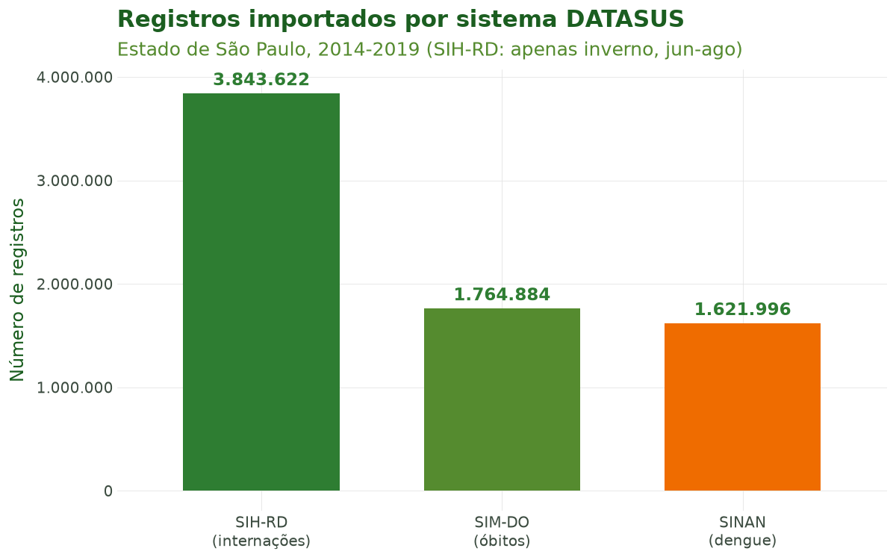
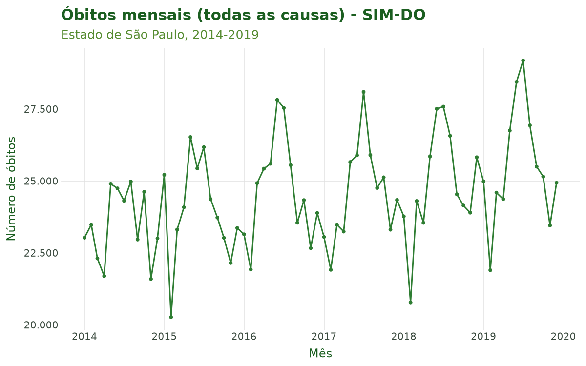

Tutorial 1: Importação de Dados do DATASUS¶
← Voltar para a Trilha do Pipeline
Objetivo¶
Ao final deste tutorial você será capaz de importar microdados dos Sistemas de Informação em
Saúde do DATASUS com uma única função — sus_data_import() — e de controlar seus principais
recursos: a escolha do sistema (SIM, SIH, SINAN, SINASC, CNES, SIA) e seus subsistemas, o
recorte espacial (por UF, por região predefinida ou por município), a diferença entre sistemas
anuais e mensais e — fundamental para trabalhos reprodutíveis e de grande volume — o
cache, que evita baixar os mesmos dados duas vezes.
A importação é a primeira etapa do pipeline do climasus4py. Tudo o que vem depois (padronização, filtragem, criação de variáveis, agregação, junção espacial, vínculo socioeconômico, integração climática e modelagem) parte da base bruta construída aqui.
Contexto científico¶
A pesquisa em clima e saúde no Brasil apoia-se nos Sistemas de Informação em Saúde (SIS) mantidos pelo Ministério da Saúde e disponibilizados pelo DATASUS. Cada sistema registra um tipo de evento, com cobertura nacional e granularidade municipal:
- SIM — Sistema de Informações sobre Mortalidade (declarações de óbito);
- SIH — Sistema de Informações Hospitalares (internações/AIH);
- SINAN — Sistema de Informação de Agravos de Notificação (doenças notificáveis, como dengue, zika e chikungunya);
- SINASC — Sistema de Informações sobre Nascidos Vivos;
- CNES — Cadastro Nacional de Estabelecimentos de Saúde;
- SIA — Sistema de Informações Ambulatoriais.
O DATASUS publica esses dados em arquivos .dbc. O climasus4py baixa os arquivos diretamente
do servidor do DATASUS, lê cada um com o
climasus_readdbc_py e o guarda em cache
no formato Parquet, para não baixar os mesmos dados a cada execução. O resultado é uma consulta
do DuckDB: os dados ficam em disco e só são carregados na memória quando
você pede. Importar de forma reprodutível — registrando sistema, ano e recorte espacial — é o
que torna um estudo auditável e replicável.
Caso condutor. Ao longo de toda a série de tutoriais investigamos a temperatura e os desfechos de saúde em idosos (60+) na Região Metropolitana de São Paulo, 2014–2019. Neste primeiro tutorial montamos a base bruta multissistema: óbitos (SIM-DO), internações (SIH-RD) e, como caso secundário de clima × arboviroses, dengue (SINAN-DENGUE). Os objetos importados aqui servirão de entrada para o Tutorial 2 (Limpeza e Padronização).
Dados utilizados¶
| Sistema | system= |
Periodicidade | Papel no caso |
|---|---|---|---|
| SIM-DO (óbitos) | "SIM-DO" |
Anual | Desfecho principal (mortalidade) |
| SIH-RD (internações) | "SIH-RD" |
Mensal (aceita month) |
Morbidade hospitalar |
| SINAN-DENGUE | "SINAN-DENGUE" |
Anual | Caso secundário (clima × dengue) |
Recorte espacial: estado de São Paulo (uf="SP"), 2014–2019. Todos os dados são públicos e
reais, obtidos do DATASUS.
Pipeline completo¶
Os blocos abaixo reproduzem o que o script
tools/tutoriais/tutorial_01_importacao.py
executa. Comece carregando o pacote:
Importar um sistema anual (SIM-DO)¶
O SIM é anual: cada ano é um arquivo, e o argumento month não se aplica. Pedimos os seis
anos de uma vez; o cache vem ligado por padrão.
Visualizar dados
obitos.columns # nomes das colunas
obitos.limit(5).df() # as cinco primeiras linhas, como tabela do pandas
Importar um sistema mensal (SIH-RD)¶
O SIH é mensal: cada mês é um arquivo. Com month, você escolhe quais meses baixar; sem
ele, vêm os doze. Aqui pedimos apenas os meses de inverno (junho a agosto), quando a mortalidade
respiratória de idosos tende a ser mais alta.
internacoes = cs.sus_data_import(
system="SIH-RD",
uf="SP",
year=[2014, 2015, 2016, 2017, 2018, 2019],
month=[6, 7, 8], # junho, julho e agosto
)
Visualizar dados
Importar notificações (SINAN-DENGUE)¶
dengue = cs.sus_data_import(
system="SINAN-DENGUE",
uf="SP",
year=[2014, 2015, 2016, 2017, 2018, 2019],
)
Visualizar dados
Recorte espacial: por região ou por município¶
Em vez de listar UFs, você pode usar um grupo predefinido em region (macrorregiões, biomas
ou bacias) — útil para estudos regionais:
# Toda a macrorregião Sudeste (ES, MG, RJ, SP) de uma vez:
obitos_sudeste = cs.sus_data_import(
system="SIM-DO",
region="sudeste",
year=2019,
)
Para ficar com um único município, use sus_filter() sobre os dados importados. O código
IBGE pode ter 7 dígitos ("3550308") ou 6 ("355030", a forma gravada pelo DATASUS); para
filtrar pelo nome, use city=:
# Apenas o município de São Paulo (código IBGE 3550308):
obitos_muni_sp = cs.sus_filter(obitos, municipality="3550308")
# O mesmo recorte, pelo nome:
obitos_muni_sp = cs.sus_filter(obitos, city="São Paulo")
O DATASUS publica um arquivo por estado, então o recorte por município é feito depois do download — o arquivo de São Paulo é baixado uma vez e fica no cache.
(Opcional) Reler dados já exportados¶
Depois de exportar a base com sus_data_export(), você pode relê-la em sessões futuras sem
baixar de novo, com sus_data_read(), que detecta o formato pela extensão:
cs.sus_data_export(obitos, "output/sim_sp_2014_2019.parquet")
obitos = cs.sus_data_read("output/sim_sp_2014_2019.parquet")
Ao final desta etapa temos obitos, internacoes e dengue — a base bruta multissistema
que alimentará os próximos tutoriais.
Características das funções¶
sus_data_import()¶
A porta de entrada da etapa de importação.
| Argumento | Essencial? | Descrição |
|---|---|---|
system |
sim | Sistema/subsistema (ver tabela de sistemas abaixo) |
uf / region |
sim (um deles) | UF(s) ("SP", ["SP", "RJ"], "all") ou grupo predefinido ("sudeste", "amazonia_legal", …) |
year |
sim | Ano(s) com 4 dígitos (ex.: 2019 ou [2014, 2015, 2016, 2017, 2018, 2019]) |
month |
só mensais | Mês(es) de 1 a 12, para SIH, CNES e SIA; sem ele, vêm os doze meses |
cache |
recomendado | True (padrão) reaproveita downloads anteriores |
cache_dir |
opcional | Pasta do cache (padrão: dados/cache, na pasta onde você está trabalhando) |
timeout |
opcional | Tempo máximo de cada download, em segundos (padrão: 600) |
path / data |
opcional | Lê um arquivo local (.parquet ou .csv) ou um pandas.DataFrame, em vez de baixar |
verbose |
opcional | Mostra o progresso (padrão: True) |
Retorno: uma consulta do DuckDB (DuckDBPyRelation) com as variáveis originais do sistema.
Nada é carregado na memória até você pedir — por exemplo, com .df(), que devolve uma tabela do
pandas.
Cache. Cada combinação de sistema, UF, ano e mês vira um arquivo Parquet em cache_dir,
reaproveitado automaticamente nas chamadas seguintes. Para baixar de novo, apague o arquivo
correspondente ou use cache=False.
sus_data_read()¶
Relê arquivos já exportados, sem voltar à fonte. Detecta o formato pela extensão.
| Argumento | Descrição |
|---|---|
path |
Caminho de um arquivo, uma lista de arquivos, uma pasta ou um padrão como "cache/*.parquet" |
format |
None (detecta) ou "parquet", "csv" |
read_metadata |
Recupera os metadados do pipeline gravados junto com o arquivo |
Retorno: uma consulta do DuckDB sobre os arquivos lidos. Vários arquivos são combinados pelo nome das colunas.
Sistemas e subsistemas suportados¶
Tabela 1. Sistemas do DATASUS acessíveis por sus_data_import().
| Sistema | Descrição | Exemplos de system |
Periodicidade |
|---|---|---|---|
| SIM | Mortalidade (declarações de óbito) | SIM-DO, SIM-DOFET, SIM-DOINF, SIM-DOMAT, SIM-DOEXT | Anual |
| SIH | Internações hospitalares (AIH) | SIH-RD, SIH-RJ, SIH-SP, SIH-ER | Mensal |
| SINASC | Nascidos vivos | SINASC | Anual |
| SINAN | Agravos de notificação (doenças notificáveis) | SINAN-DENGUE, SINAN-ZIKA, SINAN-CHIKUNGUNYA, SINAN-MALARIA, … | Anual |
| CNES | Estabelecimentos de saúde | CNES-LT, CNES-ST, CNES-EQ, CNES-PF, … | Mensal |
| SIA | Atendimentos ambulatoriais | SIA-PA, SIA-AB, SIA-AD, … | Mensal |
Atalhos de region (baixam várias UFs de uma vez):
Tabela 2. Exemplos de grupos predefinidos aceitos em region.
| Grupo | Tipo | UFs |
|---|---|---|
sudeste |
Macrorregião IBGE | ES, MG, RJ, SP |
sul |
Macrorregião IBGE | PR, RS, SC |
nordeste |
Macrorregião IBGE | AL, BA, CE, MA, PB, PE, PI, RN, SE |
norte |
Macrorregião IBGE | AC, AP, AM, PA, RO, RR, TO |
centro_oeste |
Macrorregião IBGE | DF, GO, MT, MS |
amazonia_legal |
Bioma/fronteira ecológica | AC, AP, AM, PA, RO, RR, MT, MA, TO |
mata_atlantica |
Bioma | AL, BA, CE, ES, GO, MA, MG, MS, PB, PE, PI, PR, RJ, RN, RS, SC, SE, SP |
cerrado |
Bioma | BA, DF, GO, MA, MG, MS, MT, PA, PI, PR, RO, SP, TO |
bacia_sao_francisco |
Bacia hidrográfica | AL, BA, DF, GO, MG, PE, SE |
semi_arido |
Recorte climático | AL, BA, CE, MA, PB, PE, PI, RN, SE, MG |
Estrutura típica do SIM-DO logo após a importação (causa básica em CAUSABAS, idade codificada
em IDADE, município de residência em CODMUNRES):
Tabela 3. Amostra das colunas-chave do SIM-DO importado.
| DTOBITO | DTNASC | SEXO | IDADE | RACACOR | CAUSABAS | CODMUNRES | CODMUNOCOR |
|---|---|---|---|---|---|---|---|
| 2014-01-28 | 2001-02-04 | 2 | 412 | 1 | X959 | 355030 | 355030 |
| 2014-01-28 | 1968-03-01 | 2 | 445 | 1 | C509 | 355030 | 355030 |
| 2014-01-28 | 1954-11-04 | 2 | 459 | 1 | C509 | 355030 | 351300 |
| 2014-01-28 | 1967-04-29 | 1 | 446 | 4 | I219 | 355030 | 355030 |
| 2014-01-28 | 1930-10-15 | 2 | 483 | 1 | I330 | 350410 | 350410 |
| 2014-01-01 | 1960-07-10 | 1 | 453 | 1 | K746 | 352940 | 352940 |
| 2014-01-01 | 1928-02-15 | 2 | 485 | 1 | I259 | 352940 | 352940 |
| 2014-01-01 | 1935-12-31 | 2 | 478 | 1 | C260 | 352940 | 352940 |
| 2014-01-01 | 1937-09-14 | 1 | 476 | 1 | G709 | 351380 | 351380 |
| 2014-01-01 | 1955-05-03 | 1 | 458 | 2 | C159 | 352470 | 352470 |
As datas (DTOBITO, DTNASC) já chegam convertidas em datas na importação. Os demais campos
mantêm os códigos do DATASUS: SEXO 1 = masculino e 2 = feminino; IDADE com três dígitos, em
que o primeiro é a unidade (4 = anos) e os outros dois, a quantidade (445 = 45 anos). A
tradução desses códigos é feita no Tutorial 2, pelo sus_data_standardize().
Resultados ilustrados¶

Figura 1. Número de registros importados por sistema para São Paulo, 2014–2019 (o SIH-RD foi restrito ao inverno, junho–agosto, para manter o exemplo leve). A ordem de grandeza muito diferente entre sistemas ajuda a dimensionar memória e tempo de download.

Figura 2. Série mensal de óbitos (todas as causas) do SIM-DO em São Paulo, 2014–2019. A sazonalidade de inverno já é visível na base bruta e será o ponto de partida para os recortes (idosos, causas respiratórias) dos próximos tutoriais.
Referências¶
- Ministério da Saúde (Brasil). DATASUS — Departamento de Informática do SUS. Disponível em: https://datasus.saude.gov.br.